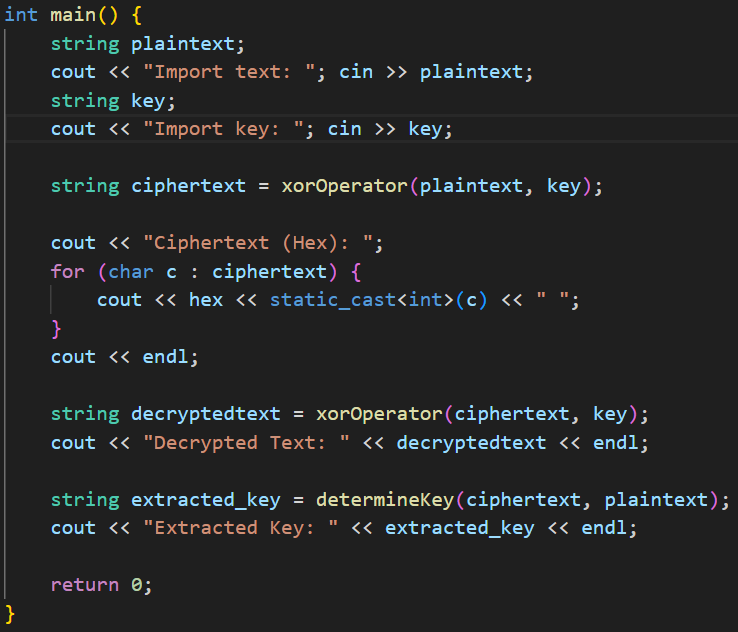
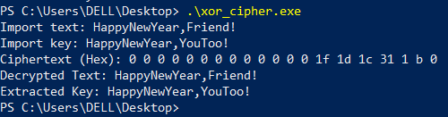

- Нгуен Дык Ань
- Студенческий билет: 1032215251
- Группа: НКНбд-01-21
- Российский университет дружбы народов
- https://github.com/NguyenDucAnh0512
Элементы криптографии. Однократное гаммирование
19 Октябрь 2024
Освоить на практике применение режима однократного гаммирования.
Нужно подобрать ключ, чтобы получить сообщение «С Новым Годом, друзья!». Требуется разработать приложение, позволяющее шифровать и дешифровать данные в режиме однократного гаммирования. Приложение должно:
Определить вид шифротекста при известном ключе и известном открытом тексте.
Определить ключ, с помощью которого шифротекст может быть преобразован в некоторый фрагмент текста, представляющий собой один из возможных вариантов прочтения открытого текста.
Мы используем метод шифрования: Выполнение операции сложения по модулю 2 (XOR)
Поскольку такой метод шифрования является симметричным, так как двойное прибавление одной и той же величины по модулю 2 восстанавливает исходное значение, а шифрование и расшифрование выполняется одной и той же программой
Функция преобразует каждый элемент введенного текста в новый элемент, зашифрованный на основе ключа, с помощью операцией сложения по модулю 2 (XOR): Ci = Pi + Ki
Где Ci — i-й символ получившегося зашифрованного послания, Pi — i-й символ открытого текста, Ki — i-й символ ключа, i = 1, …, m
Функция определяет ключ, когда известен открытый текст и зашифрованный текст, на основе XOR: Ki = Ci + Pi
Если известны шифротекст и открытый текст, то задача нахождения ключа решается также в соответствии с (1), а именно, обе части равенства необходимо сложить по модулю 2 с Pi: Ci + Pi = Pi + Ki + Pi = Ki

В main мы будем собирать данные с клавиатуры
Используовать функцию “xorOperator” для генерации зашифрованного текста и вывода зашифрованного текста на экран
Используовать функцию “xorOperator”, чтобы расшифровать зашифрованный текст и вывести исходный текст на экран
Используовать ранее созданный зашифрованный текст и исходный текст, чтобы найти ключ и вывести исходный текст на экран

После лаборатоной работы я получил практические навыки по применение режима однократного гаммирования